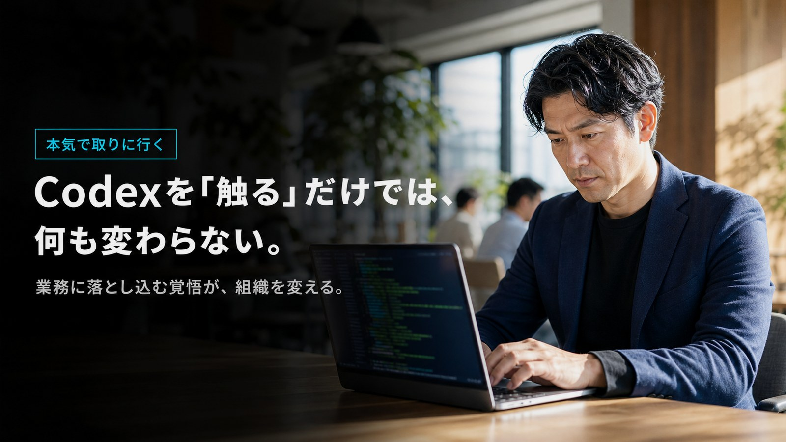
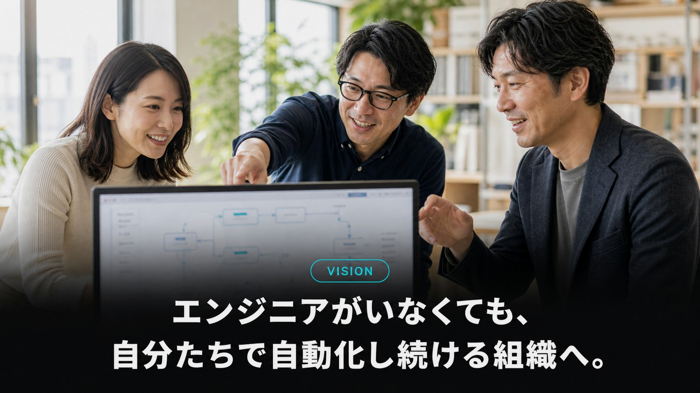
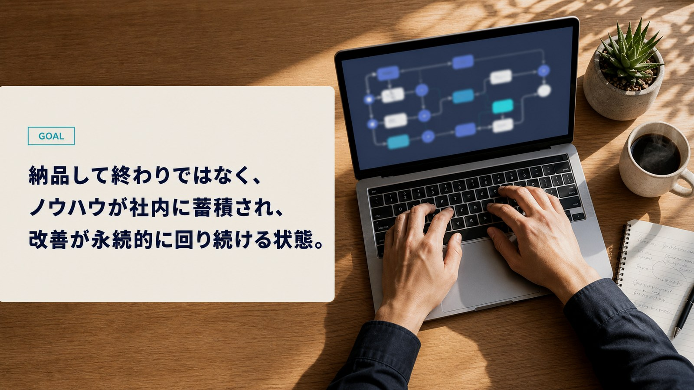
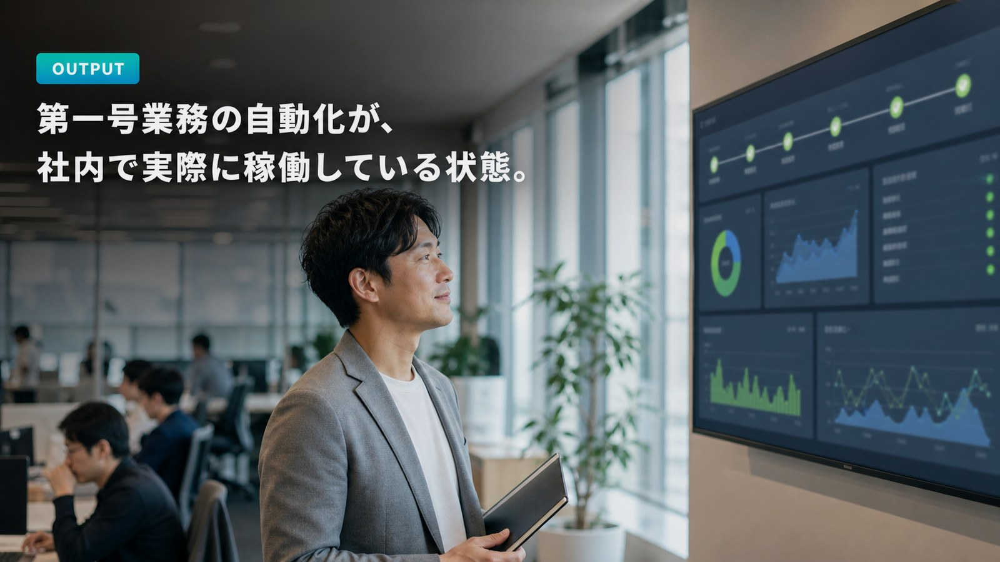
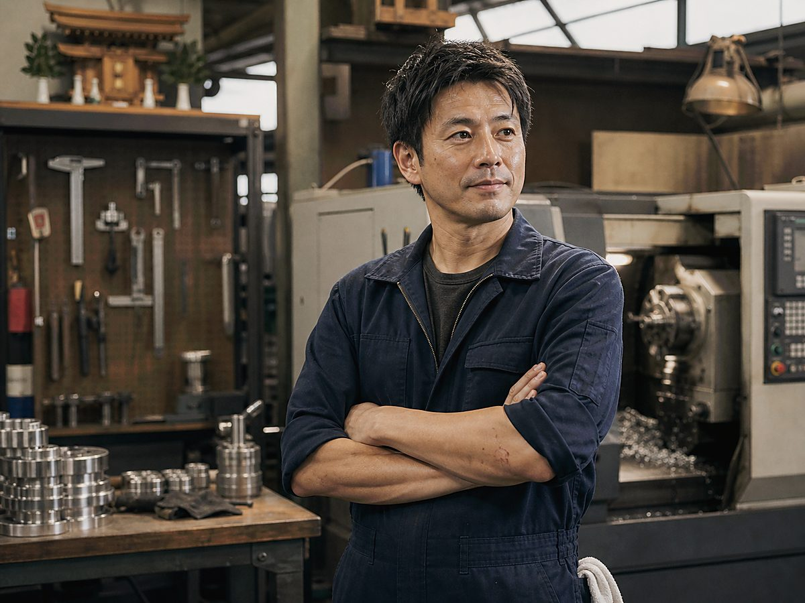

01
Codexを中核にした
「実装まで」やりきる伴走
座学やプロンプト集の配布では終わりません。御社のリポジトリ・ツール・データに直接Codexを接続し、 実業務を一緒に自動化していきます。「動くものができる」まで担当エンジニアが横で並走します。
ChatGPTもCopilotも触ってみた。けれど、結局「社長と一部メンバーが頑張るだけ」で終わっていませんか。
「触ってみたけど精度がイマイチ」「結局自分で書いた方が早い」で挫折。
レポート作成、データ転記、議事録整理…自動化できるはずの仕事に毎日数時間。
小さな改修・スクリプト作成も外注頼み。社内資産にもならない。
「自分が止まると事業が止まる」状態から何年も抜け出せない。
OpenAI Codex を中核に、業務自動化・社内ツール内製化・AIエージェント運用までを
90〜180日で仕上げきる、ガチ実装・本気伴走のDXプログラムです。
「AIを学ぶ」研修ではなく、現場のタスクを実際にCodexで仕上げきる実装伴走です。
座学やプロンプト集の配布では終わりません。御社のリポジトリ・ツール・データに直接Codexを接続し、 実業務を一緒に自動化していきます。「動くものができる」まで担当エンジニアが横で並走します。
Codex CLI でのリポジトリ横断改修、IDE 連携での日常開発、API 経由でのワークフロー組み込みまで、 ユースケースごとに最適な使い方を設計。「使い始め」だけで終わらせず、運用フェーズまで仕上げます。
モデル/APIは月単位で変わる世界。GPT-5系・Codex 系の最新挙動を当社が常時検証し、 「先月の正解」が「今月のアンチパターン」になっていないかを継続的にメンテナンスします。
週次の進捗レビューに加え、現場メンバーには日次でタスクと成果物を確認。 「学んだ気」「触ってみた気」で終わらせないために、妥協ゼロの本気伴走でやりきります。
| Codex DX 加速ブートキャンプ |
一般的な AI研修 |
動画教材・ オンラインスクール |
開発会社への 外注 |
|
|---|---|---|---|---|
| メインツール | OpenAI Codex （最新モデル） | ChatGPT中心 | 古い教材も多い | 会社による |
| 実装まで伴走 | ○ 担当が並走 | △ 講義のみ | × 自学自習 | ○ ただし丸投げ |
| 社内資産化 | ○ 内製化前提 | △ 個人スキル止まり | △ 個人スキル止まり | × ブラックボックス |
| モデル更新追従 | ○ 常時メンテ | × | × | △ |
| 運用定着支援 | ○ 週次/日次 | × | × | × |
| 費用感 | 月額固定 | 月額固定 | 低価格 | 都度高額 |
Codex は、もはや “補助ツール” ではありません。設計から実装、レビュー、デプロイ、運用までを担う
“もう一人の社員” です。
私たちはそのCodexを御社の文脈に合わせてセットアップし、社員がCodexに正しく仕事を渡せる状態をつくります。
ゴールは「便利になった」ではなく、事業が自走することです。
AIに触れた経験は、もう十分にあるはずです。次に必要なのは、業務に落とし込む覚悟。
ここから先は、決断したチームだけが進めるフェーズです。
日報の確認、請求書チェック、顧客への一次返信、外注先への発注書作成——
こうした「重要ではないけれど誰かがやらなければならない仕事」を、
社長自身が抱え続けている会社は驚くほど多い。
属人化したこれらの業務は、休めない・抜けられない・任せられない、という三重苦を生みます。
そして経営者の時間は、本来やるべき経営判断ではなく、日常業務の埋め合わせに溶けていきます。
「自分が抜けたら、止まる。」その状態を、何年続けてきましたか？
「『社長が抜けられない』を、続けますか？」
ChatGPTを開いた経験。Copilotで補完を試した経験。
経営者や現場メンバーの多くは、すでに「AIに触れた経験」を一通り持っています。
ところが 業務工数は減らず、属人化は解消されず、組織は変わらない。
理由は明確です。AIを“触る”ことと、AIに業務を“渡す”ことは、まったく別物だからです。
後者には、業務の分解・データ接続・実装・運用・改善という、骨太な工程が必要になります。
「触っただけ」で終わった経営者は、何も変わらないまま1年を浪費する。

「Codexを"触る"だけでは、何も変わらない。」
私たちが目指すゴールは、御社に「AIに詳しい人を1人増やす」ことではありません。
営業も、経理も、CSも、人事も、全員がCodexに正しく仕事を渡せる状態を作ることです。
一度この型ができれば、新しい業務が増えるたびに、外注や採用を増やす必要はなくなります。
自社の業務に最も詳しい当事者が、その場で自動化を完成させていく——
それが、エンジニアがいなくても自走できる組織の姿です。
「AIを触れる人」ではなく「AIに任せられるチーム」を作る。

「エンジニアがいなくても、自分たちで自動化し続ける組織へ。」
外注で作ったツールは、外注先が抜けた瞬間にブラックボックス化します。
似た問題が次に起こったときも、また外注に頼るしかない——
このループは、社内資産がまったく蓄積しない構造です。
Codex運用は、その逆をやります。 業務のたびに、社内に手順書・テンプレ・知見が蓄積していき、
翌月の自動化、来期の自動化、3年後の自動化が、自分たちの手で完結するようになる。
これが「納品して終わり」ではなく「永続する仕組み」を残す、という意味です。
資産になるのは、ツールではなく、社内に蓄積するノウハウです。

「納品して終わりではなく、ノウハウが社内に蓄積される。」
私たちのプログラムには、「資料を渡して終わり」「動画を見せて終わり」のフェーズが一つもありません。
受講期間中、毎週1回・最低60分のレビューセッションを担当エンジニアが直接実施し、
進捗・つまずき・次週の到達点を一緒に決めます。
Slackでの日次の質問にも、原則24時間以内にレスポンス。
御社のメンバーが手を止めたまま放置される時間を作らないことが、ゴール到達の絶対条件だと考えています。
妥協ゼロで仕上げきる。これは曖昧な決意ではなく、運用のルールです。
「週1回ペース / 全期間伴走。やりきるまで、横にいます。」
受講開始から90日。最も負荷の高い業務、もしくは最も改善インパクトの大きい業務のうち1本が、
実際にCodexで自動稼働している状態を作ります。
これは「ツールが完成した」ではなく、「毎日その自動化が動き、誰かの工数が実際に消えている」状態を指します。
この第一号が動き出した時点で、社内には自動化のロードマップ、運用ルール、改善サイクルがすでに敷かれています。
翌月から、第二号・第三号の自動化を、社内メンバーだけで仕掛けていける状態が完成しています。
ゴールは「動くもの」ができることではなく、「動き続ける状態」を残すこと。

「OUTPUT — 第一号業務の自動化が、社内で実際に稼働している状態。」
これらすべてを、本気で取りに行くと決めた経営者・責任者の方だけが、
次の60分の無料カウンセリングにお進みください。
受講期間は3ヶ月／6ヶ月から選択可能。それぞれフェーズごとに到達ゴールを定義します。
どちらのプランも、実装伴走・週次レビュー・モデル更新追従が含まれます。
まずは1〜2業務を確実に自動化したい企業向け
AIエージェント運用まで踏み込んで内製化したい企業向け
※ 正確な金額は事業規模・参加人数によって変動します。無料相談で詳細をお伝えします。
そのまま動く50本以上のCodex指示テンプレートを共有します。
受講期間中の検証用APIコストを一定枠まで当社負担。
修了後も活用Tipsとモデル更新情報を共有するクローズドコミュニティに招待。
開始から30日以内に「期待した内容と違う」と感じられた場合、初月費用を全額返金します。
私たちは“なんとなく学んだ気”で終わらせないことに本気です。
2025年7月〜2026年4月までに当プログラムを完了された企業の事例の一部です。
「会員ごとのトレーニング履歴整理とInstagram投稿の下書きをCodexに任せられるように。 “1人ジムでもここまで回せる”という確信を持てたのが何より大きいです」

「親父の代からの紙の図面と職人の頭の中にあった知識を、Codexと一緒に整理していきました。 “次の世代に渡せる工場”に近づいた実感があります」
「予約LINEへの返信文の下書きと、お客様のカルテメモの自動整理をCodexにお願いしています。 施術に集中する時間が増え、技術練習にもまた時間を回せるようになりました」
「日報集計と請求書チェックがCodexで全自動になり、毎月60時間の工数が消えました。 一番大きいのは、社員が“自分で自動化できる”と思える文化に変わったこと」
「外注で月50万かかっていた小規模開発が、社内のCodex運用で完結するように。 “社長が抜けると止まる”状態を半年で抜け出せました」
「レポート作成、競合調査、A/Bテスト案出しまでCodexに任せる運用に。 “AIに任せる前提”でチームの動き方そのものが変わりました」
※ 個人情報および取引上の機密保持のため、企業名・店舗名は仮称、氏名はイニシャル表記としています。実数値は受講者からの自己申告に基づきます。
※ 左右の矢印 ／ 下のドット ／ スワイプで他の事例をご覧いただけます。
世の中には“AIを学ぶ”研修が溢れています。しかし学んだだけでは1円も生まれません。
私たちは、御社の業務に Codex を接続し、実際に動かし、定着するまで並走する伴走者です。
1社でも多く、「社長が現場に張りつかなくても回る組織」を一緒につくれたら嬉しいです。
代表取締役 ／ Codex DX 事業責任者
右側のフォームから60秒で送信できます。
1営業日以内にGoogle Meet面談の候補をお送りします。
現状の課題と、Codex で何が解決できるかをその場で診断します。
必要に応じてNDAを締結し、最短2週間で実装伴走を開始します。
問題ありません。受講者の約7割は受講開始時点でCodex未経験です。環境構築から並走します。
可能です。むしろ非エンジニアの方が「人間がやっていた業務」を持っているため、自動化効果が大きく出やすい傾向にあります。
2026年時点のOpenAI最新モデル（GPT-5系・Codex 系）は、エンタープライズ向けの安定性、ツール呼び出し精度、コード生成品質において優位性があると判断しているためです。なお必要に応じて他モデルとの併用も設計します。
OpenAI のエンタープライズ設定（学習にデータを使用しない設定 / リージョン指定 等）を前提に構築します。社外秘データの取り扱いは事前にNDAを締結のうえ設計します。
開始から30日間は全額返金対象です。それ以降についても、ゴール未達であれば期間延長を無償で行うケースがあります。
はい。すべてオンライン（Google Meet / Slack / GitHub）で完結します。
まずは60分の無料カウンセリングで、御社の業務がCodexで何時間減らせるかを診断します。
無料で相談する →完全無料／しつこい営業は一切ありません／1営業日以内にご返信